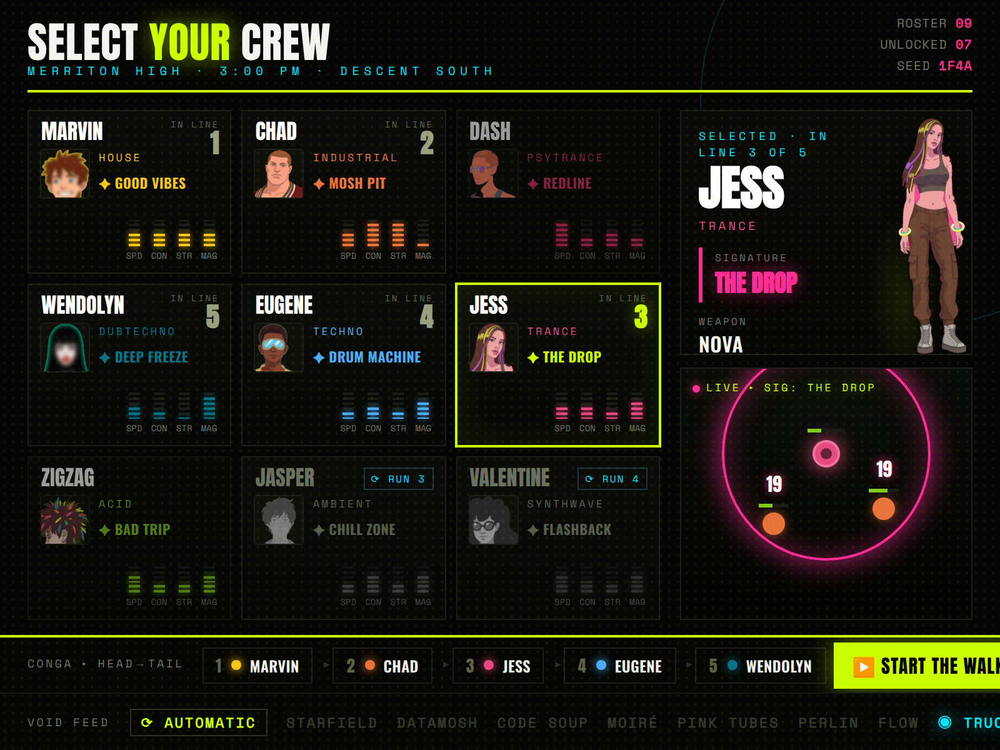
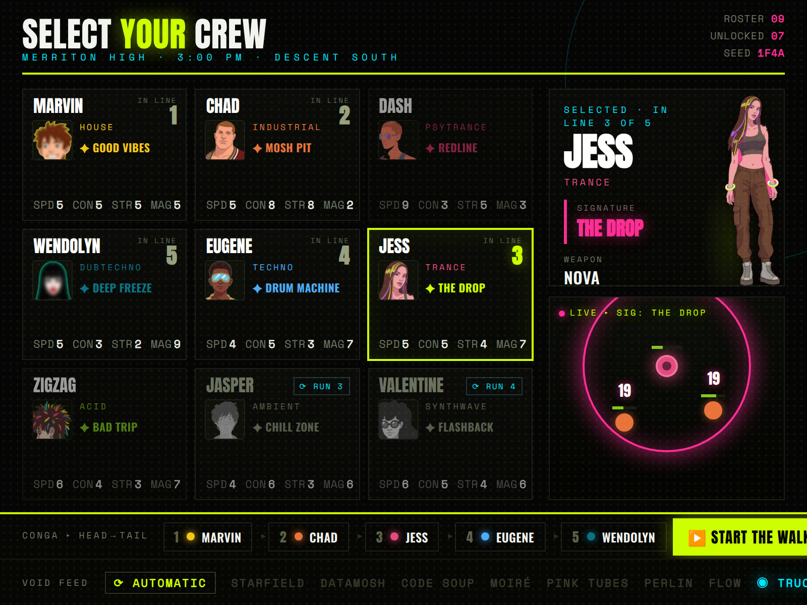
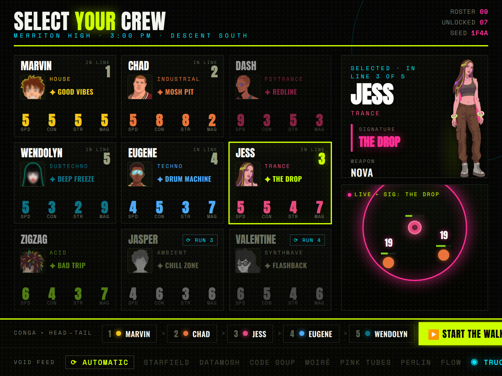

Stats brought back to the cards, four ways. Also applied: cardinal unit numbers dropped (only the place in line remains, top-right), and three avatar states — full for the party, dim for unlocked-but-unpicked, greyed for not-yet-won.



All on the V4 avatar base. Pick a stat treatment (and say if the dim/greyed contrast needs tuning) and I'll lock the 3A spec to port into partySelectScene.